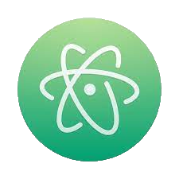
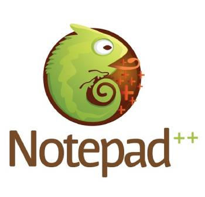

¿Que es un editor de codigo?
Un editor de codigo es un software diseñado específicamente para editar el código fuente de programas informáticos . Puede ser una aplicación individual o estar incluido en un entorno de desarrollo integrado (IDE). Los editores de código tienen características diseñadas exclusivamente para simplificar y acelerar la escritura de código , como resaltado de sintaxis , autocompletado y pareo de llaves.
Los 4 editores de codigo más utilizados
Los desarrolladores y programadores cuentan con herramientas que les permiten editar el código, trabajar sobre él y modificarlo. Y dentro de este segmento, existe toda una subcultura asociada. Fanáticos o detractores, cada desarrollador debe elegir con cuidado un programa que facilite su trabajo diario y mejore su productividad. Y son varios los factores que se ponen en juego para esta elección: el sistema operativo, la velocidad, la versatilidad, el rendimiento, los complementos, la compatibilidad o no con determinados lenguajes de programación, la apariencia, y en definitiva, la comodidad que aporte a la tarea diaria.
La realidad es que más allá de que discutamos sus pros y contras, al tratarse de talento humano, la elección de un editor de código por sobre otro dependerá de las preferencias, costumbres y experiencia subjetiva de quien utilice una u otra herramienta.
1. Visual Studio Code

Uno de los mejores editores de código para comenzar a programar es el Visual Studio Code. Desarrollado por Windows -aunque con muy buen funcionamiento en Mac-, quienes lo eligen destacan su consola integrada, los comandos y atajos que te facilitan la vida y te hacen codear más rápido y, al igual que a Atom, las excelentes extensiones que ofrece.
Este editor es gratuito, open-source, muy estable y rápido, y proporciona acciones y recursos muy interesantes que lo convierten en uno de los preferidos por los desarrolladores. ¿Qué podemos hacer con VS Code? Autocompletar con IntelliSense, descripción automática en tiempo real de la API, abrir y ordenar múltiples carpetas, realizar una comparación de versión lado a lado y la posibilidad de editar de manera colaborativa y en vivo. Además de su compatibilidad con más de 30 lenguajes.
Es ideal y muy amigable para quienes recién comienzan a aprender a programar siempre y cuando regulen la instalación de extensiones, una funcionalidad que puede volverse en contra y confundir a los recién iniciados.
2. Atom

Editor de código desarrollado por GitHub, Atom no solo es compatible con todos los sistemas operativos, sino que su comunidad -que ha contribuido a que la herramienta madure desde su publicación en 2015-, ofrece un gestor de paquetes integrado para buscar e instalar nuevas extensiones, todas ellas de código abierto.
Al estar estrechamente ligado a GitHub, Atom permite establecer un repositorio GitHub para el proyecto sobre el que se esté trabajando, sin tener que visitar la plataforma de desarrollo. Adicionalmente, permite recurrir al sistema de control de versiones Git para tener control de todos los cambios realizados en el código, poderlos testear o también revertirlos. E incluye todas las funcionalidades básicas que esperamos para uno de los mejores editores de código: resaltado de sintaxis, reconocimiento automático de lenguaje, code-folding, autocompletar texto y código y la función buscar y reemplazar (términos, expresiones y secciones en todo el proyecto).
3. Sublime text

Uno de los mejores editores de código es el Sublime Text. Es liviano, open-source y básicamente hace lo que tiene que hacer: permite editar archivos de manera fácil y rápida. Muy completo, si se lo extiende con la gran cantidad de plugins disponibles.
Disponible para Mac, Windows y Linux, es un editor de código súper extensible, con una gran cantidad de plugins para instalarle y con la posibilidad de personalizar totalmente su interfaz. Además, es compatible con una amplia cantidad de lenguajes de programación.
4. Notepad++

Editor de código muy popular para los desarrolladores que programan en entorno Windows. De software libre y gratuito, si bien no es tan potente como Sublime Text, Notepad++ es una alternativa muy atractiva para aquellos programadores que buscan una herramienta fácil de usar y no demandan funciones tan avanzadas como las que ofrecen otro tipo de editores.
¿Cuales son sus caracteristicas?Múltiples pestañas y multiview, resaltado de sintaxis, función buscar y reemplazar, función autocompletar, macros (permiten grabar acciones repetitivas al introducir el código y reproducirlas), y la opción de incrementar sus funcionalidades al instalarle plugins.